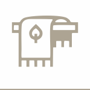

ХІМЧИСТКА
одягу
Ми дбаємо про одяг, який ви одягаєте
ХІМЧИСТКА
КИЛИМІВ
чистка килимів всіх видів та розмірів
Послуги по чистці
Еко-чистка
одягу
одягу
Чистка органічними засобами, безпечна для немовлят та алергиків
Експрес-виведення плям
Найкраще обладнання та якісні засоби видалять навіть застарілі плями
Чистка та відновлення шкіри та хутра
Професійний підхід у догляді за шкіряними та хутряними виробами
Фарбування одягу та хутра
Відновлення кольору хутряних та текстильних виробів
аква чистка дитячих іграшок
Дезінфекція органічними засобами, безпечними навіть для немовлят
Хімчистка
килимів
килимів
Чистка усіх видів килимів будь-яких розмірів
підняття ворсу на килимі
Ваш килим буде, наче вчора придбаний - м’який та ніжний
аква чистка
килимів
килимів
Спеціальне обладнання забезпечить чистоту та свіжість без миючих засобів
Про нас
Якісна хімчистка килимів та одягу - це Зручно Вам!
Ми пишаємося нашою роботою та нашими відносинами з клієнтами.
Ми використовуємо найкращі засоби та найсучасніше обладнання, щоб зробити наші послуги максимально ефективними, забезпечуючи найвищий рівень обслуговування ваших речей.
Ви пробували все інше, тепер спробуйте найкраще!
Як ми працюємо
Ваша заявка
Доставка в хімчистку

Чистка та правильна сушка
доставка додому
Наше обладнання
Головною запорукою якісної чистки є найкраще італійське обладняння, яке допомагає нам позбутися від серйозних
забруднень і пилу.
Тому компанія "Зручно Вам" пропонує вам послуги професійного чищення одягу і килимів.
Чистка проводиться лише у спеціально обладнаному приміщенні.
Наші співробітники в своїй роботі застосовують спеціальні пристрої і тільки кращі хімічні засоби, щоб
позбавити килим пилу і забруднень.
Навіщо чистити професійно?
Захист від бактерій та мікробів
Брудний килим не тільки зіпсує настрій і враження, а й може стати
рознощиком хвороботворних бактерій і вірусів.
Регулярна хімчистка килимів і килимових покриттів здатна продовжити термін служби і підтримувати
привабливий вигляд
покриття багато років. Просто прибирання пилососом, навіть самим потужним, не зможе прибрати весь пил
і бруд.
профілактика пилових кліщів
Пилові кліщі живуть у кожному будинку і квартирі, на домашньому одязі та постільній білизні. Коли
людина сідає або лягає на ліжко, в повітря піднімається мільйони частинок пилу, яка складається з
пилового кліща. За допомогою спеціального обладнання парою під великим тиском ми позбуваємось кліщів
та інших бактерій.
видаляємо алергени
Брудні килими також сприяють розвитку алергії та її загостренню. Чистку килимів потрібно проводити
регулярно, щоб не допустити накопиченню шерсті тварин та інших алергенів. Чистку можна проводити як із
застосуванням професійних миючих засобів, так і антиалергенним.
видаляємо бруд та плями
Під час чистки килима піноутворююча речовина у вигляді водного розчину втирається у килим, після чого
видаляється за допомогою спеціального обладнання. Наступним кроком є сушка килими у спеціальних
температурних умовах, щоб не деформувати його форми.
Небезпечні іграшки
Якщо не доглядати за дитячими іграшками як слід, у них почнуть заводитися мікроби, бактерії і пилові
кліщі. Це особливо важливо для іграшок, якими ваш малюк постійно грається.
Брудні іграшки також сприяють розвитку алергії.
Ваш килим непривабливий?
Грамотне чищення килима дозволить повернути йому гарний вигляд і приємний відтінок, втрачений роками
експлуатації. Хімчистка килимових покриттів здатна не тільки покращити їх зовнішній вигляд, а й
суттєво продовжити термін експлуатації.
Шкіряні речі втратили вигляд?
Речам, які виготовлені з натуральної шкіри властиво вбирати в себе
різні запахи, забруднення і пил. Від них практично не можливо позбутися в домашніх умовах.
Потрібні якісні та надійні засоби, яким не під силу спровокувати пошкодження речей, які обробляються.
Тьмяне хутро
Процедура хімічної очистки хутряних виробів ефективна і корисна для
будь-якого типу хутра, проводити її необхідно регулярно і своєчасно.
Хімчистка надає волоссю блиск, пружність, що позначається на довговічності хутряних виробів.
Хутряні вироби обробляються спеціальним складом, який протягом 2-3 років оберігає хутряні вироби від
молі.